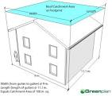
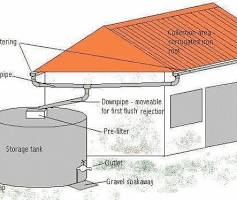
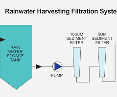
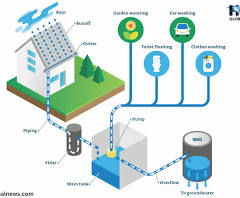

How Rainwater Harvesting Works
-
Catchment Area

Surface like rooftops or open ground that directly collects rainfall to start the harvesting process. The catchment area is the first point of contact for rainfall. For most tank based rainwater harvesting systems, the catchment area is the roof surface. Considerations include roof material and slope.The catchment area is the first point of contact for rainfall. For the vast majority of tank-based rainwater harvesting systems, the catchment area is the roof surface.To calculate how much rainwater that you can harvesting, use the equation below. A more detailed computer calculator can be found at the Calculators page. Harvested(Water gal)=Catchment(area ft)*rainfall(depth)*0.623(conversion factor)
-
Conveyance System

Gutters and pipes that guide rainwater from the catchment area to storage tanks or recharge zones. Gutters collect rainwater from rooftops and downspouts carry it through filters before storage.The conveyance system is a fancy term for the gutters and downspouts. These are basically the networks of pipes that move the water from the roof surface to the storage containers. When selecting gutters and downspouts, it’s important to consider three factors: sizing, proper installation, and aesthetics.Gutters – The gutters should be sized so that they adequately move rainwater runoff from a 100-year storm event. A 100-year storm event has a 1% chance of happening every year and produces rainfall with great intensities. Places that have intense storm events, such as Corpus Christi, would need wider gutters than places with less intense rain events, like Seattle. As a general rule, gutters should be at least 5 inches wide.
-
Filtration

Removal of debris and impurities before water storage or percolation to maintain quality. Filtration passes water through layers of media and uses devices like "first flush" diverters to discard initial pollutants.A rainwater harvesting filtration system removes impurities like leaves, dust, and debris from collected rainwater using methods like mesh strainers, sand and gravel filters, or more advanced multi-stage filters to clean water before it is stored or used. The level of filtration depends on the intended use, with basic systems for non-potable purposes and advanced systems, potentially including reverse osmosis or UV treatment, for drinking water. A filtration system is a device or process used to remove impurities from a fluid by passing it through a filter medium that retains solid particles. Systems can be mechanical, biological, or physical, and they are used for many purposes, most commonly to purify water for drinking, bathing, and industrial use by removing contaminants like sediment, chemicals, and microorganisms. Different types exist, such as reverse osmosis, activated carbon, sediment, and UV filtration, each with its own way of removing specific impurities.
-
Storage Tanks

Containers that store filtered rainwater for future use in irrigation or non-potable purposes. Excess water can be directed to recharge groundwater or kept for dry spell usage.The storage container (cistern, tank) is often the most visible or recognizable component of a RWH system. It is where the captured rainwater is diverted to and stored for later use. The main goal of the storage tank is safety. It should store water that is safe to use, and it should be secure so that children or animals cannot access the tank. There are several topics related to storage containers and you should go through each before making a decision on purchasing one. Rainwater harvesting involves collecting and storing rainwater, typically from a roof, in storage tanks for later use like gardening, flushing toilets, or washing clothes. Systems use downpipes to channel water from the roof to a tank, which can be above-ground or underground, and require filtration before storage and distribution. Proper installation includes a filtration system to remove debris and a distribution system to move the water for use.
-
Recharge Structures

Structures like pits or wells that allow water to soak into the ground replenishing groundwater. They capture runoff, filter it, and direct water underground.Recharge structures for rainwater harvesting include recharge pits, trenches, and wells, which direct filtered rainwater into the ground to replenish aquifers. Other methods include percolation tanks, ponds, and using existing structures like abandoned dug wells or borewells for recharge. The choice of structure depends on factors like soil type, available land, and the specific goal of groundwater replenishment. Narrow, deep vertical shafts often constructed to recharge shallow aquifers beneath impermeable layers. They are typically backfilled with boulders, gravel, and sand.